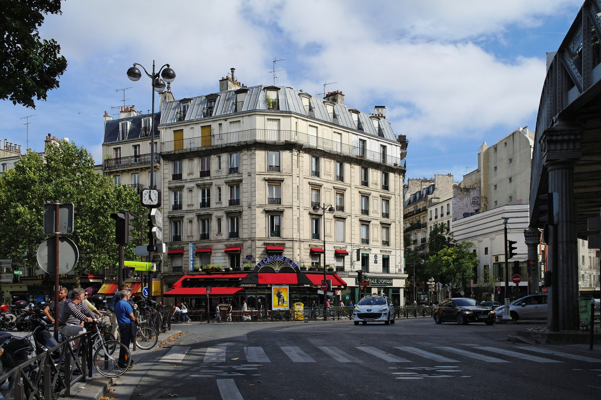
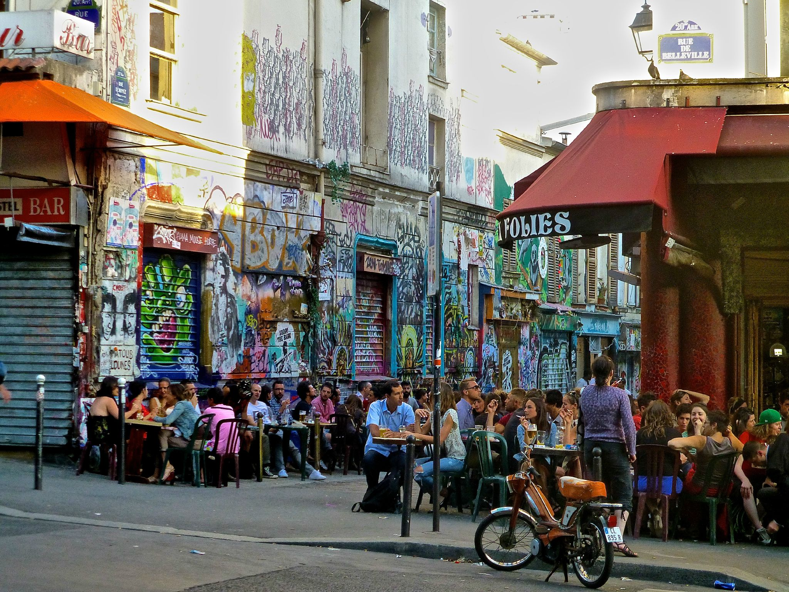
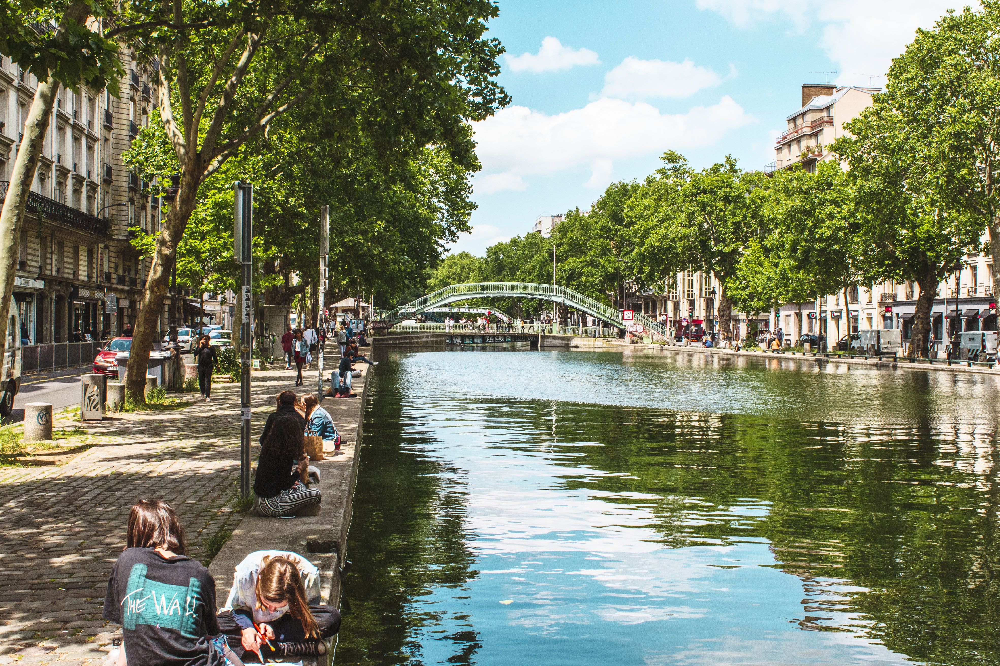
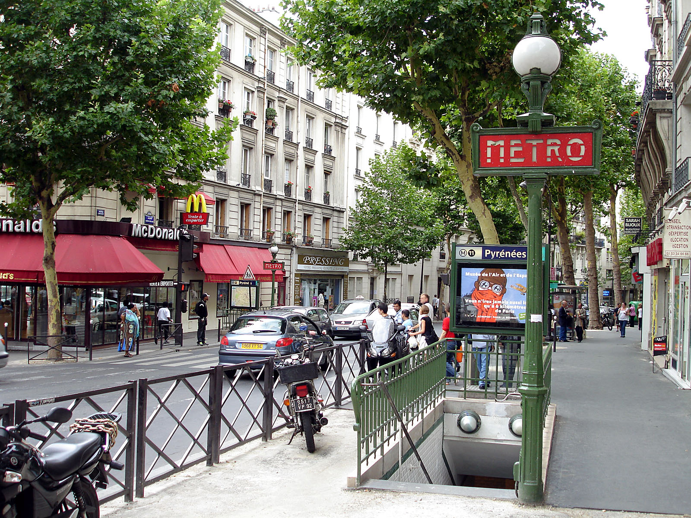
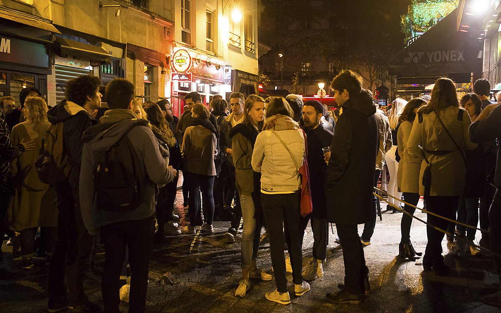

PARIS
19eme Arrondissement





Paris is one of the most romantic and visited cities in the world. There are endless reasons to visit Paris again and again: it is a beautiful and cultural city, very walkable, with great sights and it has been a source of inspiration for many writers, artists, and filmmakers. But why people love Paris so much? Why visit Paris?
Although parisian palaces feature high on the radar, a new generation of hotels is appearing and the good news is that these small establishments are affordable.
The Parisian dining scene is unlike any other in the world. In the best restaurants in Paris, exquisite French cooking is paired with opulent decor and exceptional service.
Paris is full of beautiful constructions built during different periods of her history. The city has notable examples of architecture from the Middle Ages to the 21st century.
The 19th arrondissement of Paris (XIXe arrondissement) is one of the 20 arrondissements of the capital. Popular and working-class arrondissement, this place has known profound changes. A neighborhood that now houses some of the most charming and biggest gardens of Paris, that also became an important cultural center through museums and concerts.
Although a ways away from Paris centre, the 19th Arrondissement has become a sort of cultural hub. The 19th is also about waterways, with two canals coming together from the east and north of France, that eventually spill into the Canal St Martin and head south to the Seine. But mainly, the 19th is about Parisians. 185,000 of them live here, and it's one of a few arrondissements where the numbers continue to rise. There's a lot of new construction going on and it's certain that the population will continue to rise.
The 19th arrondissement includes two public parks: the Parc des Buttes Chaumont, located on a hill, and the Parc de la Villette, which is home to the Cité des Sciences et de l'Industrie, a museum and exhibition centre, the Conservatoire de Paris and the Philharmonie de Paris.
Today, the 19th is one of Paris’ up and coming neighborhoods, with some of the best views of the city. Since the 19th isn’t exactly in the city center, it’s often overlooked by visitors, which means there are lots of hidden gems to uncover!
The canal has linked the Port de l’Arsenal to the La Villette canal basin since 1825. Its course across working class areas punctuated with locks, swing bridges, Venetian-style footbridges, and lined with chestnut trees and squares. Not surprisingly, serenades by the water and supper under the stars have become an institution here, as have brunches, delightful retro bistros and colorful eateries on both sides of the canal banks.
See MoreThe Petite Ceinture is a former railway line, which once encircled Paris . Disused since 1934, its tracks are now a haven for a rare biodiversity of wild flowers and fauna; it boasts more than 200 species of plants and more than 70 animal species. This green countrified pathway through the capital, often little-known even to Parisians, is a great discovery!
See MoreThe Buttes-Chaumont Park is one of the biggest and original green spaces in Paris. Its construction on quarries explains its impressive steepness and change in levels and heights. Visitors can appreciate stunning views of the city from this hilly setting, especially in the Montmartre district. The layout gives it a particular charm: caves and waterfalls, a suspended bridge, and a high viewpoint.
See More
1. Parc de la Vilette
The largest park in Paris, Parc de la Villette has plenty of open
spaces. The site was formerly the location of the largest meat
market in France and was dotted with abattoirs. Today it's a much
nicer place. The Grande Halle now hosts fairs and various cultural
events.
2. Cité des Sciences et de l'Industrie
At the northern end of Parc de la Villette you'll find the biggest
science museum in Europe with a planetarium, an IMAX theater, and an
impressive collection of interactive, hands-on,
scientifically-engaging exhibits.
3. Cité de la Musique
In the heart of the Parc de la Villette, the Paris Museum of Music
has 1,000 vintage instruments on display, including ones owned by
Frank Zappa and Frederic Chopin. There are also regular fascinating
temporary exhibitions to be seen here.
4. La Mouzaïa Neighborhood
This is a lovely and unusual quartier of Paris, filled with narrow
passageways free of cars, low-rise houses, and lots of small
gardens.